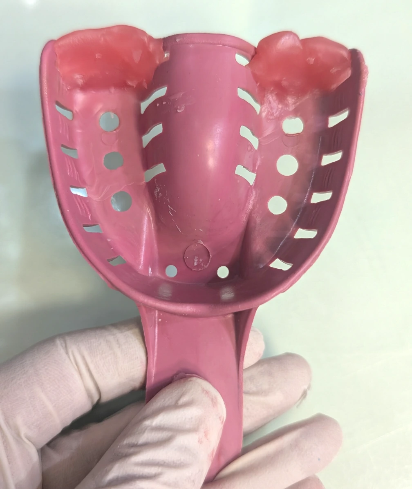

🟦 Insight 34 — کنترل جریان ماده قالبگیری با Posterior Damming

📝 توضیح بالینی
-
در قالبگیری با تریهای استوک یا اختصاصی، یکی از مشکلات رایج، فرار ماده قالبگیری از انتهای تری و حرکت آن به سمت خلف است. این اتفاق علاوه بر افزایش احتمال gag reflex، یک خطای تکنیکی مهم نیز ایجاد میکند.
-
وقتی ماده در انتهای تری مسیر فرار داشته باشد، فشار هیدرولیک کافی برای فشرده شدن ماده در اطراف دندانها ایجاد نمیشود. در نتیجه ضخامت ماده در ناحیه دندانی کاهش پیدا کرده و هنگام خارج کردن قالب، ماده در دندانهای انتهایی دچار کشیدگی (Dragging) میشود.
-
برای جلوگیری از این مشکل، پیش از قالبگیری میتوان انتهای تری را در ناحیه پشت آخرین دندان و روی ریج با موم مسدود کرد. این Posterior Damming مسیر فرار ماده را میبندد و باعث میشود ماده قالبگیری به جای حرکت به سمت عقب، در اطراف دندانها باقی بماند و فشرده شود.
-
در نتیجه ضخامت ماده در ناحیه دندانی حفظ میشود، کشیدگی کاهش مییابد و دندانهای انتهایی با دقت بالاتری ثبت میشوند.
-
این modification ساده در تری، بهویژه در مواردی که ثبت دقیق دندانهای خلفی اهمیت دارد، میتواند دقت نهایی قالب را بهطور محسوسی افزایش دهد.
✍️ دکتر فواد شهابیان
متخصص پروتزهای دندانی و ایمپلنت